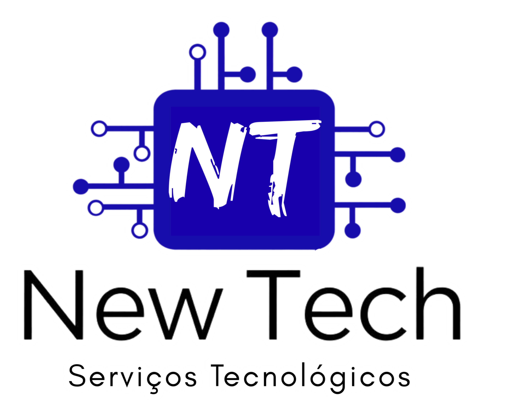

Sua máquina em boas mãos. Assistência técnica especializada para deixar seu PC ou Notebook voando.
Veja Nossos ServiçosInstalação limpa do Windows (10 ou 11) com backup seguro dos seus arquivos.
Limpeza de arquivos temporários e desativação de programas que deixam o PC lento.
Instalação do Pacote Office, navegadores, leitores de PDF e antivírus.
Limpeza profunda de ameaças (malwares) e instalação de proteção robusta.
Solução para quando o Windows trava na tela azul ou simplesmente não inicia.
Instalação e configuração de impressoras, e correção de problemas de som, Wi-Fi ou vídeo.
Ajudamos você a escolher as peças certas ou comprar o melhor notebook para o seu uso.
João Pedro - Assistência Técnica
Precisa de ajuda agora? Me chame no WhatsApp! Consigo te ajudar sem que você precise sair de casa!
WhatsApp